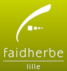

Qui suis-je ?
Salut, moi c'est Florent Maret et j'ai décidé de me lancer dans l'auto-entreprenariat ! Passionné
par les mathématiques et l'informatique depuis toujours,
j'ai obtenu un master de Data Science et je passe le plus gros de mon temps libre à apprendre de
nouvelles choses en informatique.
Si vous cherchez quelqu'un de polyvalent et efficace, je suis la personne qu'il vous faut !
Mon parcours
-
Master Ingénierie Statistique et Numérique - Data Science (Mention Bien)Université de Lille2019-2021
-
Licence de Mathématiques (Mention Assez Bien)Université de Lille2017-2019
-

CPGE - Maths Physique Sciences de l'IngénieurLycée Faidherbe - Lille2016-2017
-
Baccalauréat Scientifique - Sciences de l'Ingénieur (Mention Très Bien)Lycée César Baggio - Lille2015
Mes projets
Projet L est un jeu vidéo réalisé sur Unreal Engine et démarré lors de mon stage de Master à l'Université de Lille. Le but est de survivre dans la ville de Lille à l'époque de l'après-révolution française. Le deep learning est également utilisé dans ce projet puisque l'intelligence artificielle des ennemis du jeu est faite à partir d'algorithmes de Deep Learning (sur Python).

Ce projet avait pour but de valider une classification de sous-espèces de musaraignes faites par des chercheurs en biologie. Après avoir récupéré les différentes séquences ADN de plusieurs espèces de musaraignes (suites de A, T, C, G) et les avoir analysés, la classification a pu être confirmée.
Voir le PDF